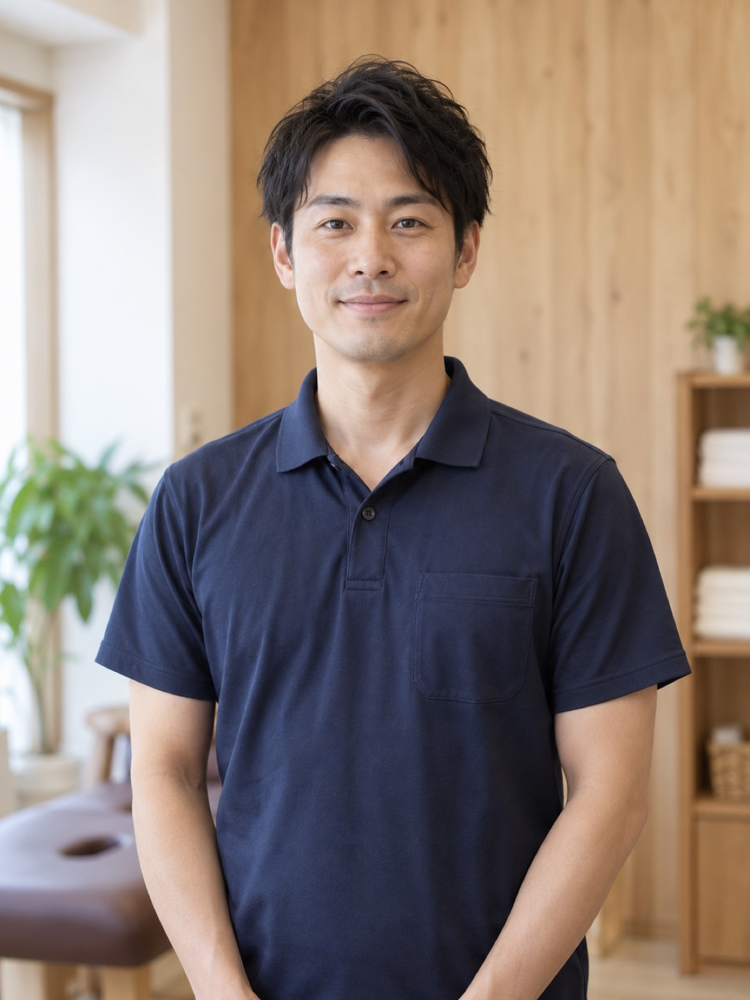

院長 / 施術者
坂井 諒RYO SAKAI
ほぐして終わりなら、来週また同じ場所が痛くなります。
施術歴 14 年。整形外科のリハビリ部門で 8 年、のべ 1 万人以上のからだを見てきました。「その場は楽になるが、数日で戻る」という声を何度も聞くうちに、原因になっている動きそのものを変えないと意味がないと考えるようになり、2020 年に はる を開院しました。腰痛と、長く続く肩こりのご相談を多く受けています。
- 得意
- 経歴
- 理学療法士養成校 卒業 → 整形外科クリニックのリハビリ部門 8 年 → 都内の整体院 4 年 → 2020 年 整体ルーム はる 開院
- 休日
- 朝の散歩と、休日の草野球